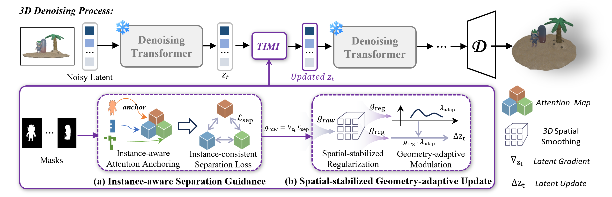

Precise spatial fidelity in Image-to-3D multi-instance generation is critical for downstream real-world applications. Recent work attempts to address this by fine-tuning pre-trained Image-to-3D (I23D) models on multi-instance datasets, which incurs substantial training overhead and struggles to guarantee spatial fidelity. In fact, we observe that pre-trained I23D models already possess meaningful spatial priors, which remain underutilized as evidenced by instance entanglement issues. Motivated by this, we propose TIMI, a novel Training-free framework for Image-to-3D Multi-Instance generation that achieves high spatial fidelity. Specifically, we first introduce an Instance-aware Separation Guidance (ISG) module, which facilitates instance disentanglement during the early denoising stage. Next, to stabilize the guidance introduced by ISG, we devise a Spatial-stabilized Geometry-adaptive Update (SGU) module that promotes the preservation of the geometric characteristics of instances while maintaining their relative relationships. Extensive experiments demonstrate that our method yields better performance in terms of both global layout and distinct local instances compared to existing multi-instance methods, without requiring additional training and with faster inference speed.

Given a single image and instance masks, TIMI guides a frozen pre-trained Image-to-3D diffusion model to generate multi-instance 3D outputs without additional training. (a) Instance-aware Separation Guidance applies instance-level constraints to early cross-attention layers to promote instance separation. (b) Spatial-stabilized Geometry-adaptive Update stabilizes inference-time guidance via geometry-adaptive gradient modulation to preserve overall spatial structure.
}